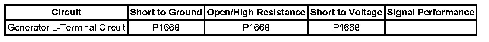

P1668
DTC P1668
DTC DESCRIPTOR
DTC P1668
Generator L-Terminal Control Circuit
DIAGNOSTIC FAULT INFORMATION

Perform the Diagnostic System Check - Vehicle prior to using this diagnostic procedure. Initial Inspection and Diagnostic Overview
CIRCUIT/SYSTEM DESCRIPTION
The engine control module (ECM) uses the generator turn ON signal circuit to control the load of the generator on the engine. A high side driver in the ECM applies a voltage to the voltage regulator. This signals the voltage regulator to turn the field circuit ON and OFF. The ECM monitors the state of the generator turn ON signal circuit. The ECM should detect low voltage on generator turn ON signal circuit when the ignition is ON and the engine is OFF, or when the charging system malfunctions. With the engine running, the ECM should detect high voltage on the generator turn ON signal circuit. The ECM performs tests to determine the status of the generator turn ON signal circuit.
CONDITIONS FOR RUNNING THE DTC
The engine is running.
CONDITIONS FOR SETTING THE DTC
With the engine running the ECM detects a low voltage on the generator turn ON signal circuit for at least 15 seconds.
ACTION TAKEN WHEN THE DTC SETS
- The ECM will command the charge indicator and or warning message to be illuminated on the instrument panel cluster (IPC) and the driver information center (DIC), if equipped.
- The ECM will not illuminate the malfunction indicator lamp (MIL).
- The ECM will store conditions, which were present when the DTC set as Fail Records data only.
CONDITIONS FOR CLEARING THE DTC
The history DTC will clear after 40 consecutive warm-up cycles have occurred without a malfunction.
CIRCUIT/SYSTEM TESTING
1. With ignition ON, and the engine OFF, disconnect the generator harness and measure the voltage of the generator turn ON signal circuit, should read near 0 volts.
- If greater than 0 volts, test the generator turn ON signal circuit for a short to voltage or replace the ECM.
2. With ignition ON, and the engine running, the voltage of the generator turn ON signal circuit, should read over 3.5 volts.
- If no voltage is measured, test the generator turn ON signal circuit for a short to ground, an open or a high resistance or replace the ECM.
3. Refer to Charging System Test. Charging System Test
REPAIR INSTRUCTIONS
Perform the Diagnostic Repair Verification after completing the diagnostic procedure. Verification Tests
Control Module References for ECM replacement, setup, and programming. Programming and Relearning